Data Normalization
Kelly Stratton, Lisa Bramer
2024-02-26
Source:vignettes/Data_Normalization.Rmd
Data_Normalization.RmdOverview
There are two general types of normalization approaches included in
pmartR:
Instrument normalization - applicable to labeled proteomics data and (sometimes) NMR data
Statistical normalization - applicable to all of the data types supported in
pmartR, with RNAseq data being a special case
When instrument normalization is required, this is done after quality control (filtering) and prior to statistical normalization.
Instrument Normalization
Labeled Proteomics
Labeled proteomics data, such as that generated via TMT (tandem mass tag) or iTRAQ (isobaric tags for relative quantification), involves running subsets of samples from an experiment on separate “plexes” or “plates” or “experiments”. Each plex includes a “reference pool” sample, consisting of a pool of all of the experimental samples. (Note that the assignment of samples to a plex is a key part of the randomization and experimental design processes, due to the way data goes missing when these labeled methods are utilized.) Samples must be normalized to their corresponding reference pool in order to enable comparisons between samples.
Usage
When working with labeled proteomics data, an
isobaricpepData object should be used. To perform the
reference pool normalization, use the normalize_isobaric()
function on data that has already been log transformed.
## [1] "isobaricpepData" "pepData"
isobaric_object <- edata_transform(isobaric_object,
data_scale = "log2"
)There are two ways to specify the information needed for identifying reference samples which should be used for normalization:
- Specify the
refpool_cnameandrefpool_notation. This should be used when the reference sample is not in a consistent channel across experiments/plates. Here,refpool_cnamegives the name of the column inf_datawhich indicates whether a sample is a reference or not, andrefpool_notationis a character string giving the value used to denote a reference sample in that column. } In both cases you must specifyexp_cnamewhich gives the column name for the column inf_datacontaining information about which plex/plate/experiment a sample was run on.
# do not apply the normalization until we have looked at the distribution of peptides within the reference pool samples
iso_norm <- normalize_isobaric(isobaric_object,
exp_cname = "Plex",
apply_norm = FALSE,
refpool_cname = "Virus",
refpool_notation = "Pool"
)
# look at the distribution of peptides within the reference pool samples
plot(iso_norm)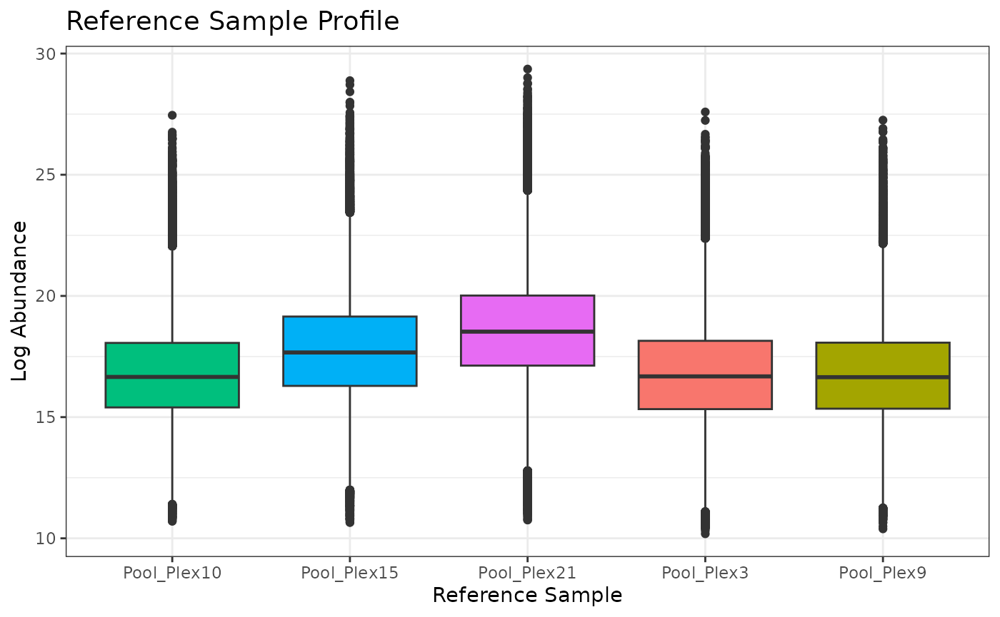
# now apply the normalization
isobaric_object_normalized <- normalize_isobaric(isobaric_object,
exp_cname = "Plex",
apply_norm = TRUE,
refpool_cname = "Virus",
refpool_notation = "Pool"
)
# look at boxplots of the data after normalization to the reference pool samples
plot(isobaric_object_normalized)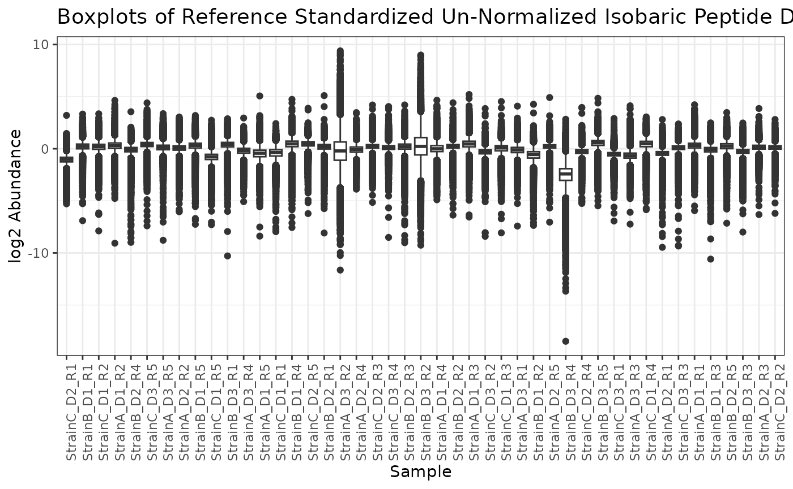
- Specify the
channel_cnameandrefpool_channel. This should be used when the reference sample for each plex/plate/experiment was always located in the same channel. Herechannel_cnamegives the column name for the column inf_datawhich gives information about which channel each sample was run on, andrefpool_channelis a character string specifying the value inchannel_colnamethat corresponds to the reference sample channel.
# not run because this data does not actually contain channel_cname or refpool_channel information
iso_norm <- normalize_isobaric(isobaric_object,
exp_cname = "Plex",
apply_norm = FALSE,
channel_cname = "SampleChannel", # this column in f_data would specify a number corresponding to the channel for each sample
refpool_channel = 4
) # this value in the SampleChannel column would always correspond to a reference pool sampleNMR
In order to ensure that samples are comparable to one another, normalizing NMR data to either a sample-specific property (such as sample mass) or to a spiked-in reference standard.
Usage
There are two ways to specify the information needed for performing instrument normalization on an nmrData object:
Specify
sample_property_cname. This should be used when normalizing to a sample property, such as sample concentration or mass, is desired. Here,sample_property_cnamegives the name of the column inf_datawhich contains the property to use for normalization. If any samples have a missing value for this column, and error is returned.Specify
metabolite_name. This should be used when normalization to a spiked in standard is desired. Heremetabolite_namegives the name of the metabolite in e_data (and e_meta, if present) corresponding to the spiked in standard. If any samples have a missing value for this metabolite, an error is returned.
The option to backtransform the data after either of these NMR normalizations is offered, if the user would like to ensure values are on a scale similar to their raw values before normalization. The following values are calculated and/or applied for backtransformation purposes:
If normalization using a metabolite in
e_datais specified, the location parameter is the median of the values formetabolite_nameIf normalization using a sample property in
f_datais specified, the location parameter is the median of the values insample_property
We’ll use the example NMR dataset from the pmartRdata
package.
summary(nmr_identified_object)##
## Class nmrData
## Unique SampleIDs (f_data) 41
## Unique Metabolites (e_data) 38
## Unique Metabolites (e_meta) 38
## Missing Observations 0
## Proportion Missing 0
# log2 transform the values
nmr_object <- edata_transform(omicsData = nmr_identified_object, data_scale = "log2")Normalize using property of each sample
We can first create a normRes object and explore the values of the sample property to be used for instrument normalization. The figure below shows the Concentration values for each sample.
# don't apply the normalization yet
normRes_property <-
normalize_nmr(nmr_object,
apply_norm = FALSE,
sample_property_cname = "Concentration"
)
plot(normRes_property)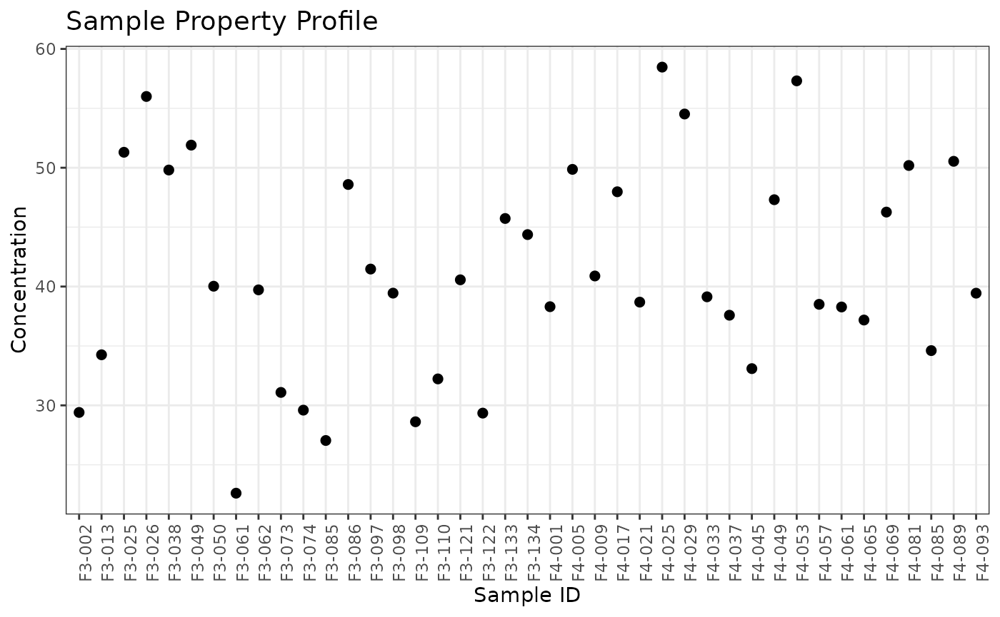
If we are satisified with using these Concentration values for normalization, we can apply the instrument normalization and plot the resulting omicsData object.
# now apply the normalization
nmr_norm_property <-
normalize_nmr(nmr_object,
apply_norm = TRUE,
sample_property_cname = "Concentration",
backtransform = TRUE
)
plot(nmr_norm_property)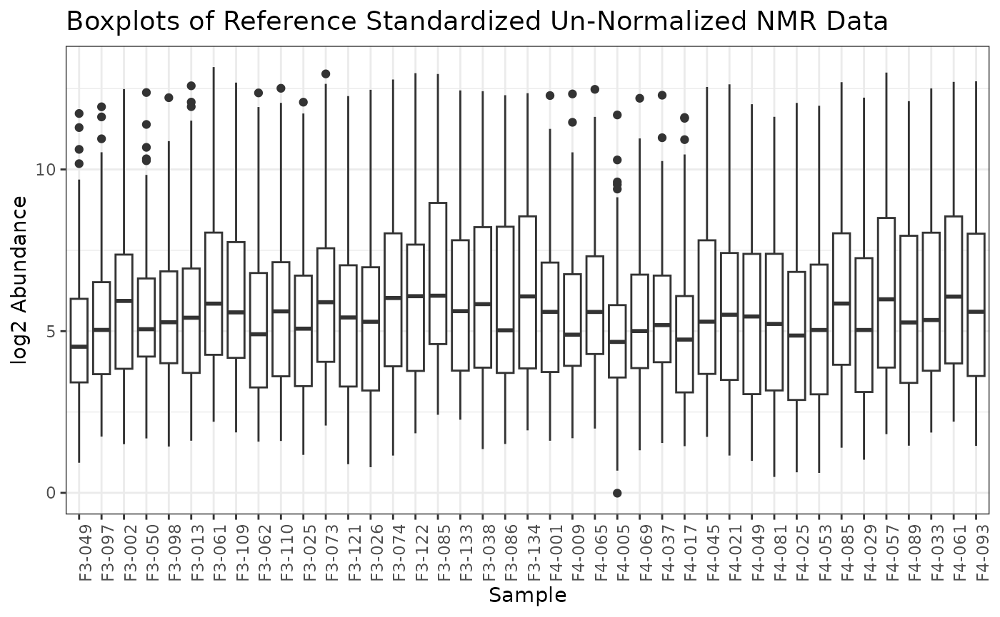
Normalize using reference metabolite
We can first create a normRes object and explore the values of the reference metabolite to be used for instrument normalization. The figure below shows the log2 values of the reference metabolite for each sample.
# don't apply the normalization yet
normRes_reference <-
normalize_nmr(nmr_object,
apply_norm = FALSE,
metabolite_name = "unkm1.53"
)
plot(normRes_reference)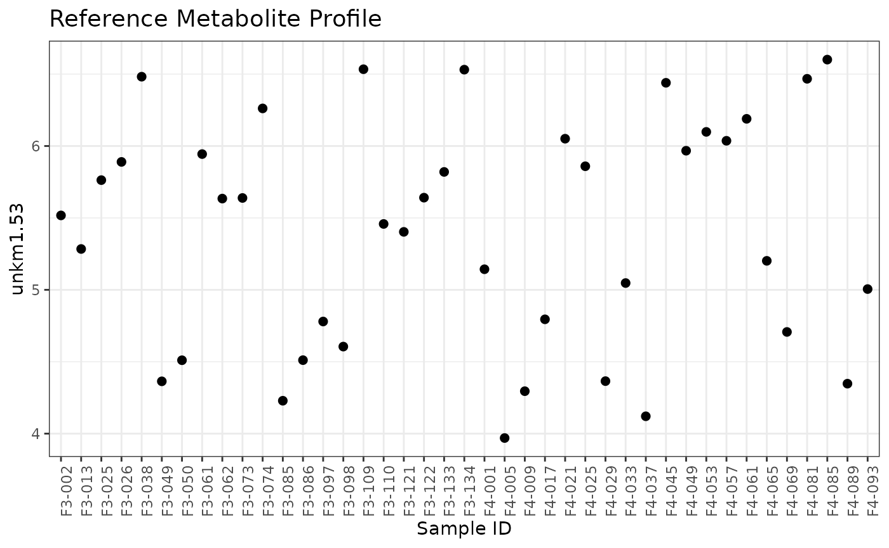
If we are satisified with using these values for normalization, we can apply the instrument normalization and plot the resulting omicsData object.
# now apply the normalization
nmr_norm_reference <- normalize_nmr(nmr_object,
apply_norm = TRUE,
metabolite_name = "unkm1.53"
)## backtransform is set to FALSE. Examine the distribution of your data to ensure this is reasonable.
plot(nmr_norm_reference)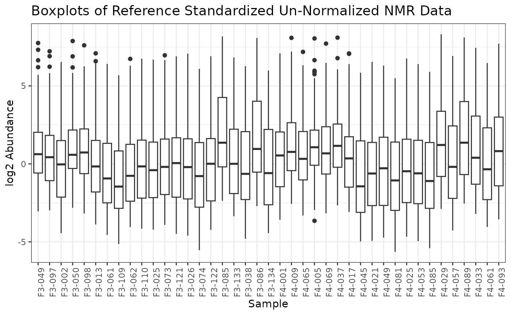
Statistical Normalization
Global Normalization
There are two specifications needed in order to compute normalization
factors: the normalization function (how the normalization factors are
computed) and the subset function (the subset of biomolecules with which
the normalization factors are computed) (Åstrand
2003),(Gautier et al. 2004). Global
normalizations in pmartR normalize within each sample, so
each sample has its own normalization factor(s), a location and
(sometimes) a scale parameter. There are several options available for
normalization and subset functions.
Normalization Functions
For all of the normalization functions, na.rm = TRUE is
utilized when computing the parameters.
Median: Location parameter for each sample is equal to the median of the observed biomolecules in the subset specified. There is no scale parameter.
Mean: Location parameter for each sample is equal to the mean of the observed biomolecules in the subset specified. There is no scale parameter.
Median Absolute Deviation (MAD): Location parameter for each sample is equal to the median of the observed biomolecules in the subset specified. Scale parameter is equal to the MAD of the observed biomolecules in the subset specified.
Z-score: Location parameter for each sample is equal to the mean of the observed biomolecules in the subset specified. Scale parameter is equal to the standard deviation of the observed biomolecules in the subset specified.
Subset Functions
All: All biomolecules are utilized
L-Order Statistics (LOS): Identifies the subset of the biomolecules associated with the top L order statistics, where L is a proportion between 0 and 1. Specifically, the biomolecules with the top L proportion of highest absolute abundance are retained for each sample, and the union of these biomolecules is taken as the subset identified (Wang et al., 2006)
Percentage of Peptides Present (PPP): Originally developed for use with proteomics data, this subset can also be applied to other omics data types. PPP identifies the subset of biomolecules that are present/non-missing for a minimum proportion of samples (Karpievitch et al., 2009; Kultima et al., 2009).
Rank Invariant Peptides (RIP): Identifies biomolecules with complete data that have a p-value greater than a defined threshold alpha (common values include 0.1 or 0.25) when subjected to a Kruskal-Wallis test based (non-parametric one-way ANOVA) on group membership (Webb-Robertson et al., 2011).
PPP-RIP: Equivalent to RIP, however, rather than requiring biomolecules with complete data, biomolecules with at least a specified proportion of non-missing values are subject to the Kruskal-Wallis test.
Complete Peptides: Biomolecules with no missing data across all samples, equivalent to PPP with proportion = 1.
Usage
Global normalization methods are applied with the
normalize_global() function. There is an argument to the
function, apply_norm, that dictates whether the
normalization method is actually applied to the data
(apply_norm = TRUE) or if instead the normalization factors
are computed so that the user can assess the appropriateness of the
normalization approach prior to applying it to a dataset
(apply_norm = FALSE). Similar to NMR normalization, the
option to backtransform the data after global normalization is available
in order to put the normalized values back on roughly the same scale as
the raw (un-normalized) data (backtransform = TRUE).
Global median centering is our go-to approach, especially for LC-MS
lipidomics, GC-MS metabolomics, and NMR. Below we provide a variety of
examples of using the normalize_global() function with
different parameter values.
When, in preparation for normalizing the data, we use the
normalize_global() function but do not apply the
normalization, we get back an object of class normRes.
# global median centering - don't apply the norm, show info in the normRes object
mypep <- edata_transform(omicsData = pep_object, data_scale = "log2")
mynorm <- normalize_global(
omicsData = mypep,
subset_fn = "all",
norm_fn = "median",
apply_norm = FALSE
)
class(mynorm)## [1] "normRes"
# plot(mynorm)When we apply the normalization to the data, we get back an omicsData
object of the same class that we started with. The
backtransform argument can be set to TRUE to
return the normalized data such that the normalized values are similar
in magnitude to the pre-normalized values. With global median centering,
this is done by adding back the median of the entire dataset to each
individual value; this results in boxplots that are no longer centered
at zero, but rather at the median of the entire dataset.
# global median centering - apply the norm
mypep_norm <- normalize_global(
omicsData = mypep,
subset_fn = "all",
norm_fn = "median",
apply_norm = TRUE,
backtransform = TRUE
)
class(mypep_norm)## [1] "pepData"
plot(mypep_norm)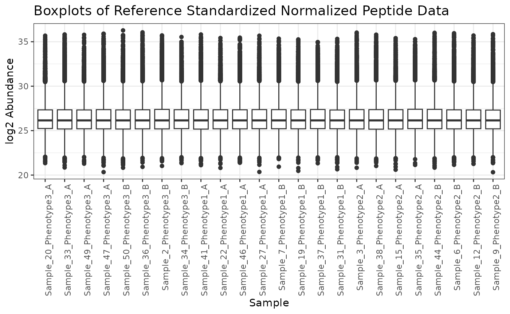
When using a subset function other than “all”, additional parameters
are needed; they have default values or can be set by the user. Here we
use rank invariant biomolecules (RIP) with a parameter of 0.2. For
details, see ?normalize_global. Note that some of the
subset functions, such as “rip”, require group_designation
to have been run on the omicsData object.
# run group_designation
mypep <- group_designation(omicsData = mypep, main_effects = "Phenotype")
# RIP mean centering - don't apply the norm (so we can look at the number of molecules in the subset)
mynorm <- normalize_global(
omicsData = mypep,
subset_fn = "rip",
params = list(rip = (0.2)),
norm_fn = "median",
apply_norm = FALSE
)
# we can see how many biomolecules are included in this subset
mynorm$n_features_calc## [1] 2746
mynorm$prop_features_calc## [1] 0.1287449If the subset of biomolecules used does not contain a sufficient number or proportion, we have less confidence in the normalization and may want to choose a different subset function. As a rule of thumb, we like to see at least 10% of the biomolecules from the normalization-ready dataset utilized in the subset for calculating the normalization parameter(s). If the normalization-ready dataset has fewer than ~200 biomolecules, as is common with LC-MS lipidomics and GC-MS metabolomics, 10% of the biomolecules may still not be enough to have confidence in the normalization, as this is only ~20 biomolecules.
We can use the min_prop argument to the
normalize_global function to enforce a minimum proportion
of biomolecules required to apply a normalization. In the following code
using the LOS (0.1) subset, we would get an error if we included
min_prop = 0.2 because the proportion of biomolecules in
the specified subset is below that threshold.
# LOS MAD
mynorm <- normalize_global(
omicsData = mypep,
subset_fn = "los",
params = list(los = (0.1)),
norm_fn = "mad",
apply_norm = FALSE
)
mynorm$prop_features_calc## [1] 0.1821933Here we demonstrate how to use the PPP subset and z-score normalization function.
# PPP z-score
mynorm <- normalize_global(
omicsData = mypep,
subset_fn = "ppp",
params = list(ppp = (0.5)),
norm_fn = "zscore",
apply_norm = FALSE,
min_prop = 0.2
)
mynorm$prop_features_calc## [1] 0.5600825Here we demonstrate how to use the PPP-RIP subset and specify parameter values, along with the median normalization function.
# PPP-RIP median
mynorm <- normalize_global(
omicsData = mypep,
subset_fn = "ppp_rip",
params = list(ppp = (0.5), rip = (0.2)),
norm_fn = "median",
apply_norm = FALSE
)
mynorm$prop_features_calc## [1] 0.4433869Finally, we demonstrate how to use the set of complete biomolecules with the mean function.
# Complete mean
mynorm <- normalize_global(
omicsData = mypep,
subset_fn = "complete",
norm_fn = "mean",
apply_norm = FALSE
)
mynorm$prop_features_calc## [1] 0.1581415For proteomics data, or large lipidomics or metabolomics datasets (>200ish biomolecules??), the Statistical Procedure for the Analyses of peptide abundance Normalization Strategies (SPANS) (Webb-Robertson et al. 2011) algorithm can help determine an appropriate normalization approach. This algorithm ranks different combinations of subset and normalization functions based on a score that captures how much bias a particular normalization procedure introduces into the data. Higher scores imply less bias.
# returns a data frame arranged by descending SPANS score
# not run due to long runtime; SPANS plot generated and saved to include in vignette
spans_result <- spans_procedure(mypep)
plot(spans_result)
To apply a normalization method after using SPANS, simply use the
normalize_global function.
mypep_norm <- normalize_global(
omicsData = mypep,
subset_fn = "all",
norm_fn = "median",
apply_norm = TRUE,
backtransform = TRUE
)LOESS Normalization
As an alternative to a global normalization, pmartR
includes a wrapper for the normalizeCyclicLoess (Bolstad et al. 2003) function from the limma
package (Smyth 2005).
plot(mypep, order_by = "Phenotype", color_by = "Phenotype")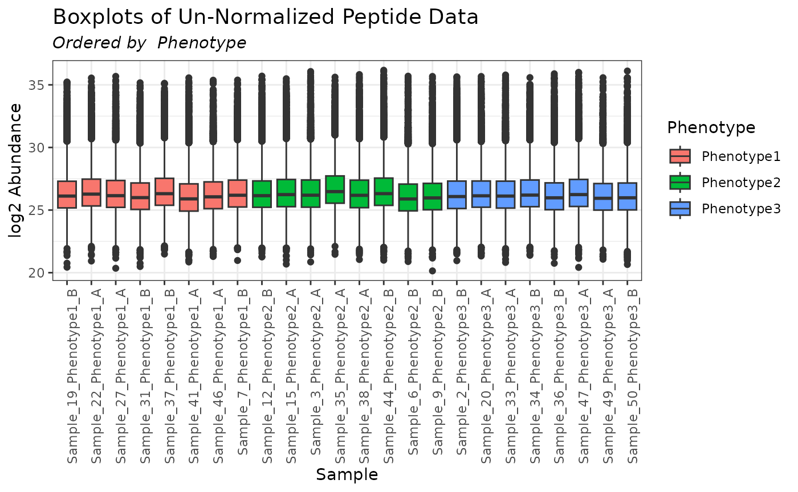
mypep_loess <- normalize_loess(omicsData = mypep)
plot(mypep_loess, order_by = "Phenotype", color_by = "Phenotype")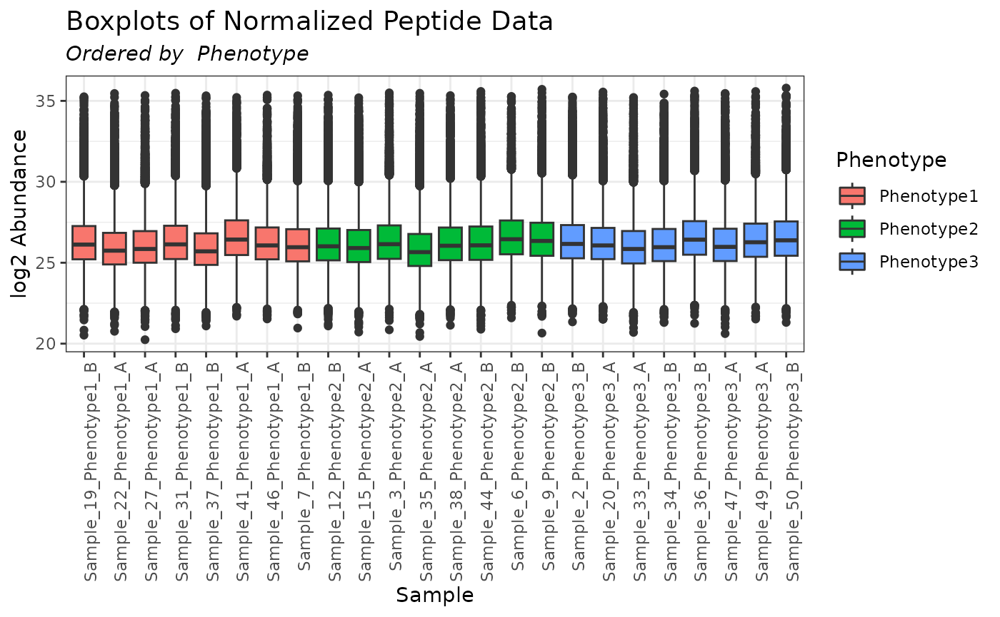
Quantile Normalization
Quantile normalization is an algorithm for normalizing a set of data
vectors by giving them the same distribution (Bolstad et al. 2003). It is applied to data on
the abundance scale (e.g. not a log scale). It is often used for
microarray data. Note that quantile normalization requires complete
data. In the example below we use the molecule_filter to
restrict our data to complete samples.
mymetab <- edata_transform(omicsData = metab_object, data_scale = "log2")
# restrict to complete samples using the molecule filter
myfilter <- molecule_filter(omicsData = mymetab)
nsamps <- get_data_info(mymetab)$num_samps
mymetab <- applyFilt(filter_object = myfilter, omicsData = mymetab, min_num = nsamps)
plot(mymetab, order_by = "Phenotype", color_by = "Phenotype")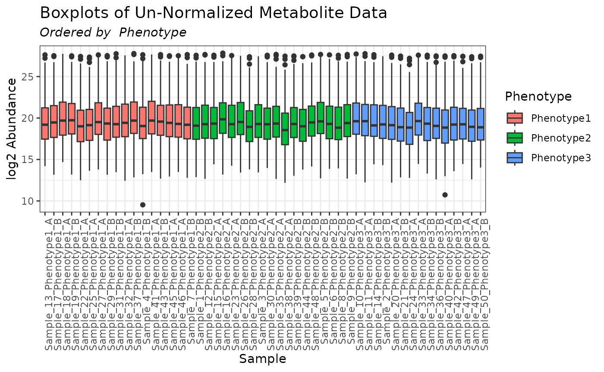
mymetab_quantile <- normalize_quantile(omicsData = mymetab)
plot(mymetab_quantile, order_by = "Phenotype", color_by = "Phenotype")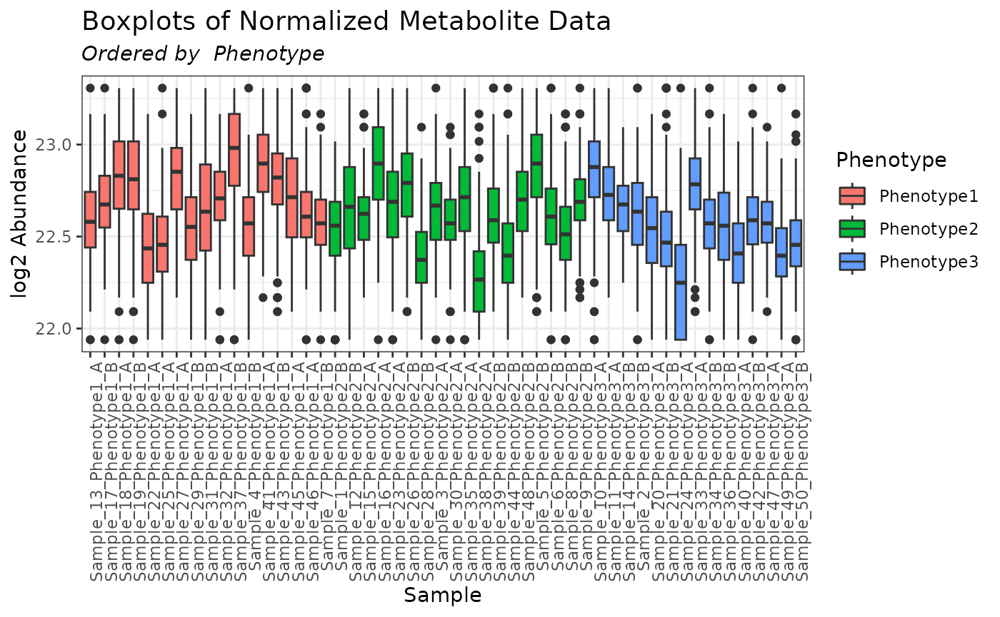
It is up to the user to determine whether the normalization ultimately applied to the data is appropriate. In the case of the quantile normalization performed above, based on the resulting boxplots we would not recommend proceeding with this dataset for further analyses; a different normalization approach should be tried.
RNAseq Data Normalization
The statistical normalization approaches for RNAseq data are combined
with the statistical analysis functions. The following are supported
within pmartR via wrapper functions for the original
functionality of the corresponding packages.
DESeq2 (Love, Anders, and Huber 2014)
edgeR (Robinson, McCarthy, and Smyth 2010)
limma voom (Law et al. 2014)
See ?diffexp_seq and the “RNAseq Processing Workflow”
for more information.